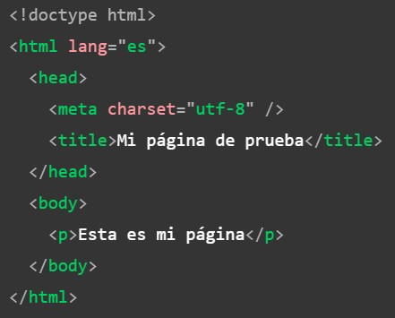
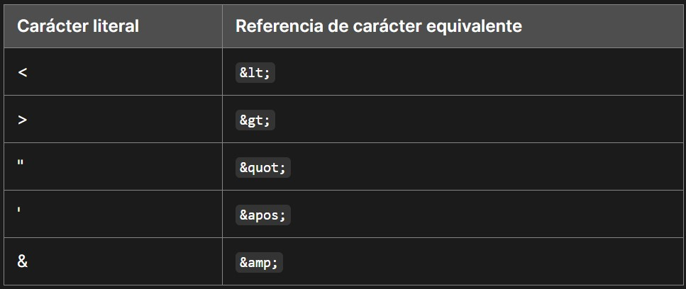

En su corazón, HTML es un lenguaje muy sencillo compuesto de elementos, que se pueden aplicar a piezas de texto para darles un significado diferente en un documento, estructura un documento en secciones lógicas e incrusta contenido como imágenes y vídeos en una página. Este módulo introducirá los dos primeros de estos, e introduce conceptos fundamentales y la sintaxis que necesitas para entender HTML.
HTML (HyperText Markup Language, por sus siglas en inglés) es un lenguaje de marcado que indica a los navegadores web cómo estructurar las páginas web que visita. Puede ser tan complicado o tan simple como el desarrollador web quiera que sea. HTML consiste en una serie de elementos, que utiliza para encerrar, envolver o marcar diferentes partes del contenido para que aparezca o actúe de cierta manera. Las etiquetas pueden convertir el contenido en un hipervínculo para conectarse a otra página, poner palabras en cursiva, etc.
NOTA: Las etiquetas en HTML no distinguen entre mayúsculas y minúsculas. Esto significa que se pueden escribir en mayúsculas o minúsculas y funcionará. Sin embargo, es una buena práctica escribir todas las etiquetas en minúsculas para mayor coherencia y legibilidad.

La anatomía de nuestro elemento es:
El elemento es la etiqueta de apertura, seguida del contenido, seguida de la etiqueta de cierre.
Los elementos se pueden colocar dentro de otros elementos. Esto se llama anidamiento. Si quisiéramos decir que nuestro gato está muy gruñón, podríamos envolver la palabra muy en un elemento "strong", lo que significa que la palabra debe tener un formato de texto fuerte. Las etiquetas tienen que abrirse y cerrarse de manera que estén dentro o fuera la una de la otra.
No todos los elementos siguen el patrón de una etiqueta de apertura, contenido y una etiqueta de cierre. Algunos elementos consisten en una sola etiqueta, que normalmente se utiliza para insertar/incrustar algo en el documento. Dichos elementos se denominan elementos vacíos. Por ejemplo, el elemento "img" incrusta un archivo de imagen en una página.
NOTA: En HTML, no es necesario añadir un / al final de la etiqueta de un elemento vacío. Sin embargo, también es una sintaxis válida, y puede hacerlo cuando desee que su HTML sea XML válido.
Los elementos también pueden tener atributos. Los atributos se ven así:

Los atributos contienen información adicional sobre el elemento que no aparecerá en el contenido. En este ejemplo, el atributo class es un nombre de identificación utilizado para identificar el elemento con información de estilo.
Un atributo debe tener:
A veces verás atributos escritos sin valores. Esto es totalmente aceptable. Estos se llaman atributos booleanos. Los atributos booleanos solo pueden tener un valor, que generalmente es el mismo que el nombre del atributo. Por ejemplo, considere el atributo disabled, que puede asignar a los elementos de entrada de formulario. (Utiliza esto para deshabilitar los elementos de entrada del formulario para que el usuario no pueda realizar entradas. Los elementos deshabilitados suelen tener un aspecto grisáceo.)
"input type="text" disabled="disabled" /"
Como abreviatura, es aceptable escribir esto de la siguiente manera:
"input type="text" disabled /"
Si observa el código de muchos otros sitios, es posible que encuentre una serie de estilos de marcado extraños, incluidos los valores de atributos sin comillas. Esto está permitido en ciertas circunstancias, pero también puede romper su margen de beneficio en otras circunstancias.
Incluya siempre las comillas de los atributos. Evita tales problemas y da como resultado un código más legible.
En este artículo, también notarás que los atributos están entre comillas dobles. Sin embargo, es posible que veas comillas simples en algún código HTML. Es una cuestión de estilo. Puedes elegir libremente cuál prefieres. Ambas opciones son equivalentes.
Asegúrate de no mezclar comillas simples y comillas dobles. Este ejemplo (a continuación) muestra una especie de mezcla de comillas que saldrá mal.
Sin embargo, si utilizas un tipo de comilla, puedes incluir el otro tipo de comilla dentro tus valores de atributo.
Para usar comillas dentro de otras comillas del mismo tipo (comillas simples o comillas dobles), use por ejemplo & quot; (sin espacio).
Los elementos HTML individualmente no son muy útiles por sí solos. A continuación, examinemos cómo se combinan los elementos para formar una página HTML completa:
Aquí tenemos:
¿Por qué usar tanto espacio en blanco? La respuesta es la legibilidad.
Puede ser más fácil entender lo que está pasando en tu código si lo tienes bien formateado. En nuestro HTML tenemos cada elemento anidado indentado por dos espacios más que el que está dentro. Depende de usted elegir el estilo de formato (cuántos espacios para cada nivel de indentación, por ejemplo), pero debe considerar formatearlo.
NOTA: El acceso a innerHTML de los elementos de JavaScript mantendrá intacto todo el espacio en blanco. Esto puede arrojar resultados inesperados si el navegador recorta el espacio en blanco.
En HTML, los caracteres <,>, ", ' y & son caracteres especiales. Son partes de la sintaxis HTML en sí. Entonces, ¿cómo incluyes uno de estos caracteres especiales en tu texto? Por ejemplo, si desea usar un signo ampersand (&) o menor que, y no interpretarlo como código.
Haces esto con referencias de caracteres. Estos son códigos especiales que representan caracteres, para ser utilizados en estas circunstancias exactas. Cada referencia de carácter comienza con un ampersand (&) y termina con un punto y coma (;).
El equivalente de referencia de carácter podría recordarse fácilmente porque el texto que utiliza puede verse como menor que (less than, en inglés) para '<', comilla (quot, en inglés) para '"' y de manera similar para otros. Para obtener más información sobre las referencias de entidades, consulta Lista de referencias de entidades de caracteres XML y HTML (Wikipedia).
NOTA: No es necesario usar referencias de entidad para ningún otro símbolo, ya que los navegadores modernos manejarán bien los símbolos reales siempre que la codificación de caracteres de tu HTML esté configurada en UTF-8.
HTML tiene un mecanismo para escribir comentarios en el código. Los navegadores ignoran los comentarios, lo que hace que los comentarios sean invisibles para el usuario. El propósito de los comentarios es permitirle incluir notas en el código para explicar su lógica o codificación. Esto es muy útil si vuelve a una base de código después de estar ausente el tiempo suficiente para no recordarlo por completo. Del mismo modo, los comentarios son invaluables ya que diferentes personas están haciendo cambios y actualizaciones.
Para escribir un comentario en HTML, envuélvalo en los marcadores especiales <!-- y -->.